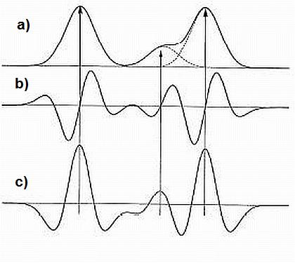

This method uses the Savitzky-Golay polynomial (A. Savitzky and M. J. E. Golay, Anal. Chem., 36, 1627 (1964)) to get the second smoothed derivative of the chromatogram intensities. The following figure (left) presents the shape of a Gaussian peak (a), the first derivative (b), and the second derivative (c). The figure at right side shows how the signal (blue line) may be divided into individual chromatographic peaks by observing the second derivative.
